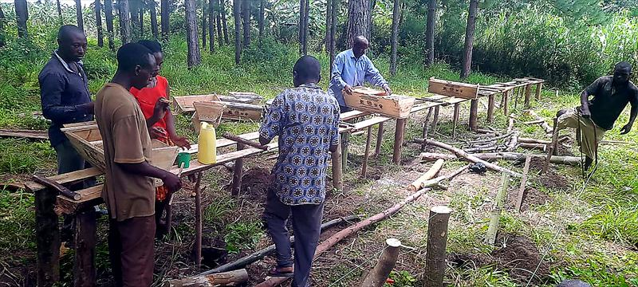
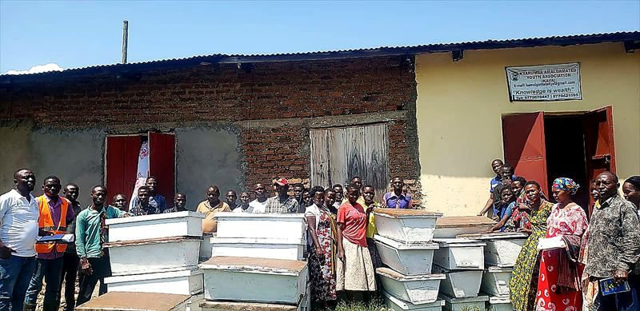
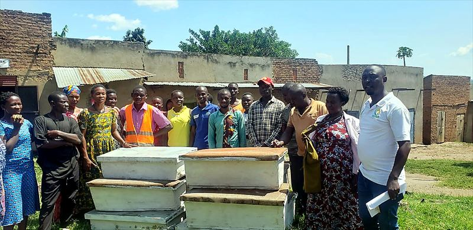

Beekeeping Skills and Enterprise
Participants receive practical guidance on preparing and setting up an apiary. Beekeeping equipment has been distributed to youth and women to support beekeeping as an alternative income-generating activity.


